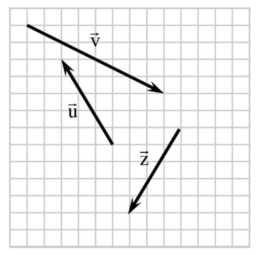
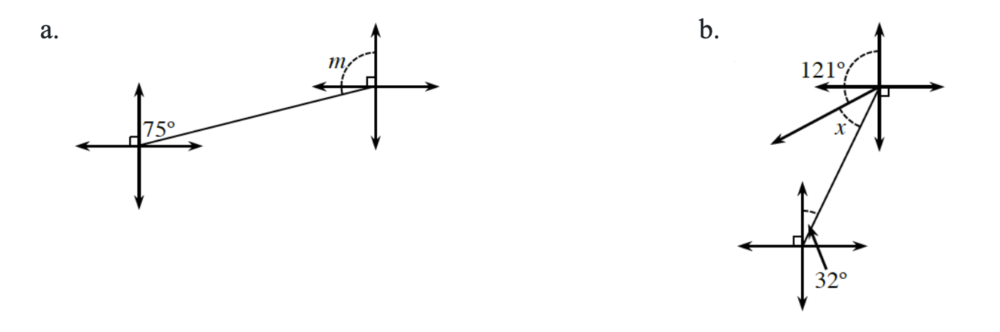

On graph paper, copy the vectors shown. Draw and label each of the following vectors. Leave room to separate each answer from the others.

\(\vec{p}\), a vector equivalent to \(\vec{v}\).
\(\vec{u}+\vec{z}\)
\(\frac{1}{2}\vec{v}\)
\(\vec{u}-\vec{v}\)
What are the magnitude and direction of each vector below?
\(-3\mathbf{i}+3\mathbf{j}\)
\(\langle 5,5\sqrt{3}\rangle\)
Calculate the slope of the line joining \(\left(1,f\left(1\right)\right)\) and \(\left(4,f\left(4\right)\right)\) if:
\(f(x)=8-x^2\)
\(f(x)=2^x\)
Graph \(l(x)=-3\log_2(x-8)\).
Solve each trigonometric equation.
\(3\sin(x)=1\text{ for }0\le x<2\pi\)
\(\sin(x)=\frac{3}{4}\) for all \(x\)
Determine the measurement represented by the variable in each diagram below. Use your knowledge of parallel lines cut by a transversal.

Determine all of the roots of \(p(x)=x^4-x^3-11x^2-x-12\). Then sketch a graph of the function. Check your sketch on a graphing calculator.
Graph each rational function. State the equations of the asymptotes.
\(m(x)=\frac{3x-5}{x-4}\)
\(n(x)=\frac{4x^2-4}{x^2-2}\)